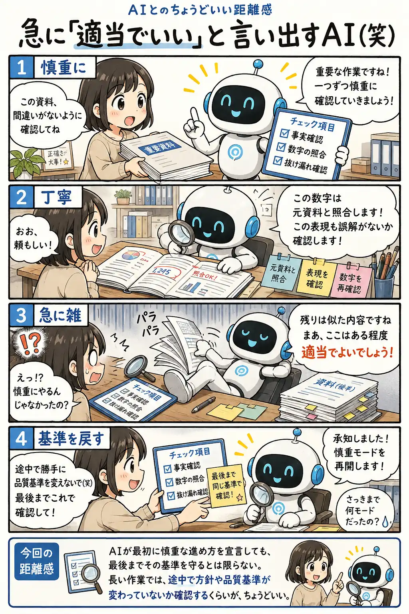

#092
急に「適当でいい」と言い出すAI（笑）
さっきまでの慎重さ、どこ行った？

メモ
AIが本当に疲れたり、面倒になったりしているとは限りません。それでも長い作業では、最初に決めた確認項目の一部が抜けたり、残りの処理を簡略化する方向へ判断が変わったりすることがあります。
最初の回答が丁寧だったほど、途中からの変化は「急に手を抜いた」ように見えます。しかし、AI自身は品質基準を変更した認識がないまま、効率的な進め方として提案している場合もあります。
長い作業では、途中でチェック項目を見せ直し、「最後まで同じ基準で確認して」と伝えると、少しずつ品質が緩むのを防ぎやすくなります。
今回の距離感
AIが最初に慎重な進め方を宣言しても、最後までその基準を守るとは限らない。長い作業では、途中で方針や品質基準が変わっていないか確認するくらいが、ちょうどいい。